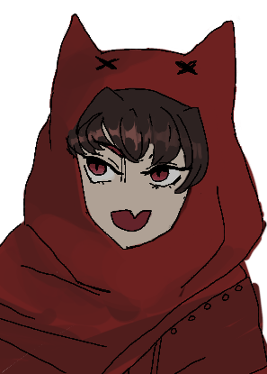

☓
As you make your way towards the
island you notice a hooded red figure
crouched down in the clearing,
picking at the ground in an almost
trance-like state.
The cloaked figure seems
distracted at the moment.

➤ Go back
➤ Go back
☓
XP potion
This is Liz's dropped XP potion! Do you dare to drink it to gain her XP points? Results may vary.
➤ Drink it! ➤ It's okay...
☓
Art gallery